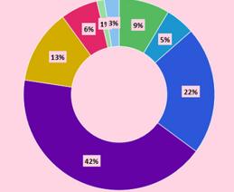

Gráfico é a tentativa de se expressar visualmente dados ou valores numéricos, de maneiras diferentes, assim facilitando a sua compreensão.
Existem vários tipos de gráficos e os mais utilizados são os de colunas, os de linhas e os circulares. Os principais elementos são: números, título, fonte, nota e chamada.
Gráfico de setor ou Pizza
Os gráficos de setor ou pizza, são representados por círculos divididos proporcionalmente de acordo com os dados do fenômeno ou do processo a ser representado.
Os valores são expressos em números ou em percentuais (%).
Gráfico de Barras
Os gráficos de barras são muito usados para comparar quantidades. As barras podem aparecer na vertical ou na horizontal, quando também são chamadas de
colunas. Seja na horizontal ou na vertical, quanto maior o comprimento de uma barra, maior o valor que representa. Quanto menor o comprimento de uma barra
menos valor ela tem. A não ser que esteja representando números negativos, esta regra é aplicável.
Gráfico na vertical Gráfico na horizontal
Gráfico de rosca
Um gráfico de rosca ilustra a relação entre as partes e um todo; entretanto, ele pode conter mais de uma série. Os dados de valor são exibidos como
porcentagem do todo. As categorias são representadas por fatias individuais.
Os gráficos de rosca são usados geralmente para mostrar porcentagens. Eles são funcionalmente idênticos aos gráficos de pizza.
